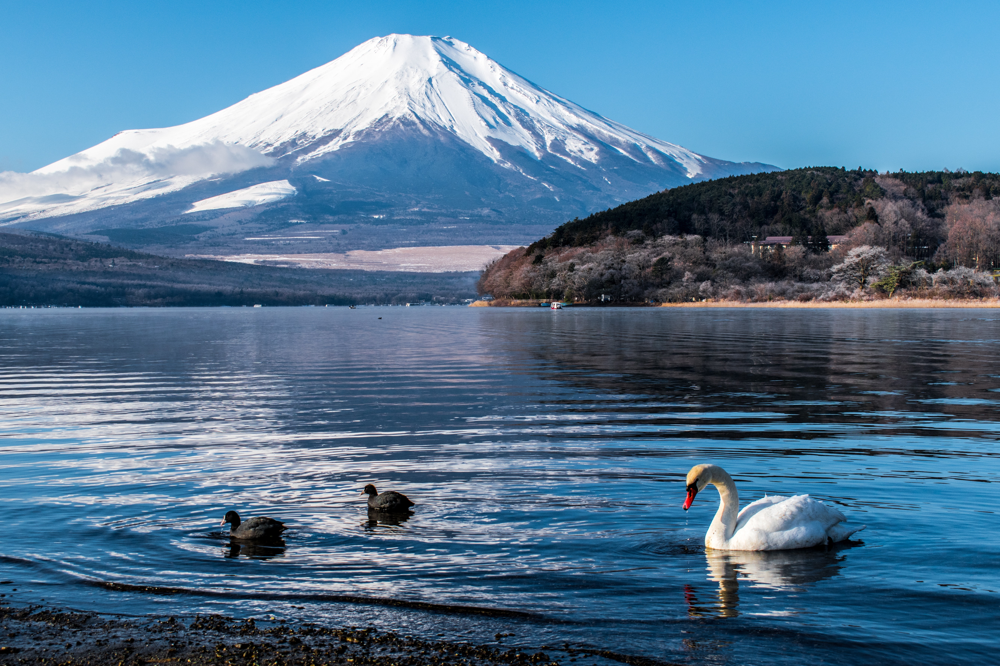

|
HOME | ABOUT | DESTINATION | CONTACT US |
|---|
 |
Osaka CastleOne of the best Places to visit in Osaka, the Osaka Castle was established in 1586 and was built by a famous Japanese warrior named Toyotomi Hideyoshi. One of the largest castles in Japan, the Osaka Castle has been reconstructed throughout the years in history due to destruction from enemies. 👈️CLICK THE IMAGE FOR MORE DETAILS |
|---|---|
Mount FujiMount Fuji, located in Japan, is an iconic symbol of the country. Standing at 3,776 meters, it offers breathtaking views and attracts thousands of visitors each year, both climbers and sightseers alike. CLICK THE IMAGE FOR MORE DETAILS👉️ |
 |
 |
Tokyo SkytreeAnother very recognizable landmark in Tokyo is the Tokyo Skytree. One of the most recommended places to visit in Tokyo is a towering structure that is the tallest building in Japan. In fact, when the Skytree was built, it was the second tallest building in the world, standing at a height of 634 metres. 👈️CLICK THE IMAGE FOR MORE DETAILS |
Tokyo TowerOne of the most striking places to visit in Tokyo is the Tokyo Tower, perhaps the most recognizable structure in all of Japan. Although it is primarily a communications tower, visitors can climb to the summit to observe a panoramic view of Tokyo. The tower is also heavily inspired by the Eiffel Tower in Paris in its structure and architecture. The tower is a symbol of Japanese recovery after the Second World War and the fact that the country has now become a major economic superpower. CLICK THE IMAGE FOR MORE DETAILS👉️ |
 |
 |
Tokyo DisneylandThis massive, 115-acre large theme park is one of the best places to visit in Tokyo, whether you are travelling alone or with kids or with your partner. It is the very first Disneyland to have been built outside of the United States and is to date, one of the main attractions in Japan. Apart from mind-boggling rides and incredible food, you can also explore Tokyo DisneySea, which is an adjoining waterpark that is just as lavish. 👈️CLICK THE IMAGE FOR MORE DETAILS |